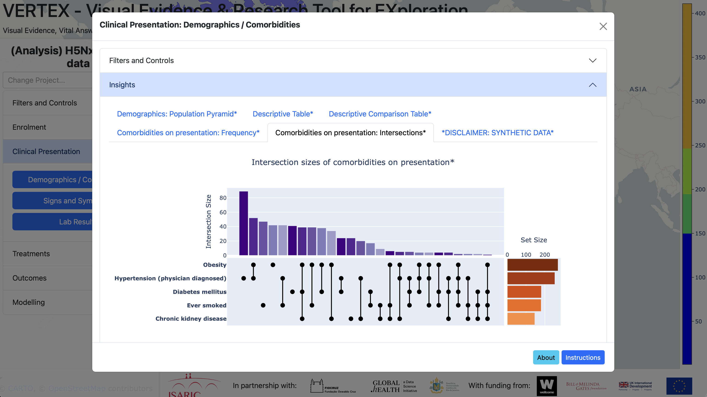
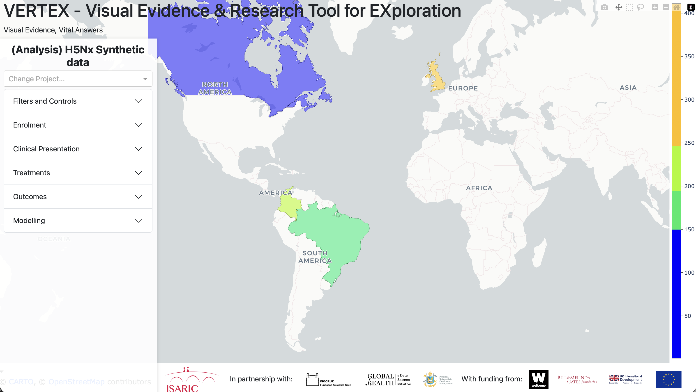
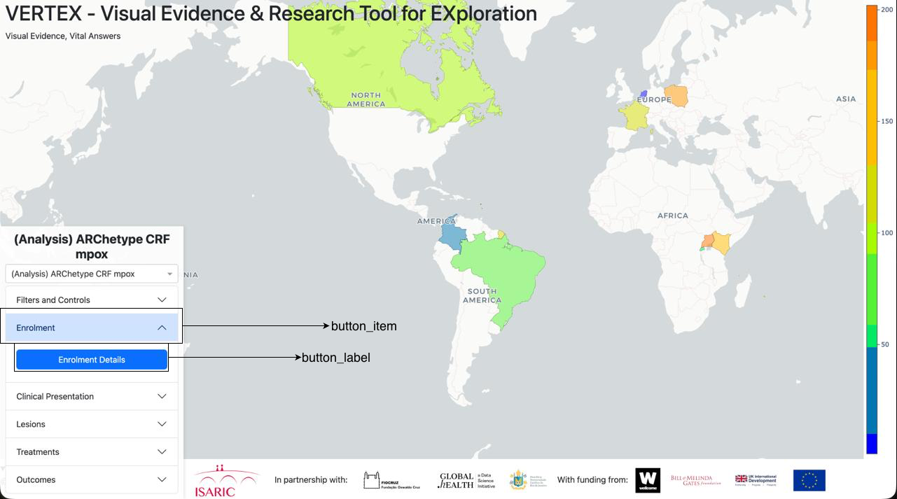

Overview
Purpose
This guide provides a brief introduction to the Visual Evidence & Research Tool for Exploration (VERTEX) dashboard and the Reusable Analytical Pipelines for Infectious Diseases (RAPID) code framework. It provides instructions for how to run the base VERTEX software on your local machine.
Introduction
VERTEX is a web-based Python application that presents graphs and tables relating to research questions that need to be quickly answered during an outbreak. This helps identification of key epidemiological factors and supports data-driven decision-making.

VERTEX - Starting Insight Panel
Open Source
VERTEX is open-source, which means that you can access and download the codebase from GitHub, and create new analysis projects for your analysis.
Types of Projects
At the moment, the VERTEX dashboard can display two types of projects.
Analysis Projects
Analysis projects retrieve data from a REDCap database using the API, preprocess this patient-level data and execute analysis code to answer research questions from a statistical analysis plan. The output of this analysis code is a series of figures and tables, which are presented in the dashboard, grouped together in insight panels.
For structuring analysis code, we borrow a concept called Reproducible Analytical Pipelines. This is intended to make analysis reproducible, efficient and auditable. We extend this concept to Reusable Analytical Pipelines for Infectious Diseases (RAPIDs), which supports the transportation of these pipelines to answer the similar research questions in similar contexts.
Static Projects
Static projects do not execute the analysis pipelines, but reproduce the figures and tables directly from aggregated (not patient-level) data files. These files can be provided directly or can be automatically created when the users runs an analysis project.
Each type of figure requires aggregated data in a specific structure, with accompanying metadata to provide other input parameters. We are currently refining this, so we do not have up-to-date documentation about each figure type. However, we can support this if you have aggregated data and you want to present results within a dashboard.
Setup & Configuration
Installation and Usage
To use VERTEX locally, clone the VERTEX GitHub repository and make sure that you have Python installed. There are several ways to run the VERTEX code.
We will demonstrate how to run the code at the command line using Docker and in VSCode without Docker, though we recommend using Docker if possible.
Docker at the command line
On the command line, navigate to the repository. Depending on how you cloned the repository, this may be in your Downloads folder or in the current working directory.
We recommend using Docker if you want to run VERTEX at the command line. You can build and run a Docker container for VERTEX with the following:
docker build -t isaric-vertex .
docker run -it --rm -v "$PWD":/app -p 8050:8050 isaric-vertex gunicorn --workers 1 --reload --bind 0.0.0.0:8050 vertex.descriptive_dashboard:serverFor using Docker within VSCode, see the VSCode Docker documentation.
VSCode without Docker
Open the VERTEX folder within VSCode. You need to create an environment from the VERTEX requirements. The simplest way to do this is Ctrl + Shift + P (or Cmd + Shift + P on MacOS), then click "Python: Create Environment...", ".venv" and choose a Python version that is >3.9. This will install a virtual environment using the requirements listed in pyproject.toml.
Next, you need to add a file .vscode/launch.json with the following:
{
"version": "0.2.0",
"configurations": [
{
"name": "ISARIC VERTEX",
"type": "python",
"request": "launch",
"module": "vertex.descriptive_dashboard",
"justMyCode": false,
"env": {
"PYTHONPATH": "${workspaceFolder}"
}
}
]
}You should now be able to run the application in debugging mode ("Run → Start Debugging") or without debugging ("Run → Run Without Debugging").
See the VSCode Python Environments documentation for more details.
VERTEX Dashboard
Once the application is running at the terminal or in VSCode, you will be able to open the local VERTEX dashboard at http://127.0.0.1:8050. You will see a menu on the left, and a world map with a colorbar.

VERTEX - Starting Dashboard
At the top of the menu is listed the current open project. You can switch between active projects using the dropdown immediately below. The current active projects are analysis projects that use low-fidelity synthetic datasets and static projects showing the results from completed ISARIC analyses.
The map shows the number of participants that were enrolled in this project by country. You can hover over each country for a more precise count of the number of participants.
Filters and Controls
Below the project selection box in the menu are a set of tabs, which are mostly specific to the selected project. Analysis projects, which retrieve the up-to-date patient-level data from a REDCap database and directly execute analysis code, have a tab called Filters and Controls. If you click on this, it will open up to show a set of core variables: sex at birth, age, country, admission date and outcome. You can select different combinations, which will filter the patient-level data and update the map accordingly.
How to
Creating a New VERTEX Project
VERTEX is intended to run one or multiple projects simultaneasly. Each project consits of two main section. The first section is the Config File of the project that contains especifics of that project like the REDCap API token and URL, the Insight Panels you plan to be shown (more on Insght Panels later in the text) and some VERTEX configurations. The second section is the Insight Panels, a set of python files that produces the graphs and tables you want to be shown in VERTEX.
Config File
First lets start talking about the Config File, the Config File is a .json file that has all the little especifications of that Project so that VERTEX can display everything inside it as you wish. Below there will be the structure of the Config File and a little explanation of each variable.
config_file.json
{
"project_name": "",
"api_url": "",
"api_key": "",
"map_layout_center_latitude": 6,
"map_layout_center_longitude": -75,
"map_layout_zoom": 1.7,
"save_public_outputs": false,
"save_filtered_public_outputs": false,
"public_path": "PUBLIC/",
"is_public": false,
"project_owner": "",
"insight_panels_path": "insight_panels/",
"insight_panels": [
"",
]
}
- "project_name": Defines the name of the project.
- "api_url": Defines the API URL used by the system.
- "api_key": Defines the authentication key for the API.
- "map_layout_center_latitude": Defines the initial center latitude of the map.
- "map_layout_center_longitude": Defines the initial center longitude of the map.
- "map_layout_zoom": Defines the initial zoom level of the map.
- "save_public_outputs": Indicates whether public outputs should be saved.
- "save_filtered_public_outputs": Indicates whether filtered public outputs should be saved.
- "public_path": Defines the path where public files will be stored.
- "is_public": Indicates whether the project should be treated as public.
- "project_owner": Defines the owner or person responsible for the project.
- "insight_panels_path": Defines the path where insight panels are stored.
- "insight_panels": Defines the list or configuration of insight panels.
Insight Panels
Now lets talk about the elephant in the room, the Insigh Panels. Here is where the magic really happens, where you are going to produce all your analytical work, a Insight Panel is a very simple concept and has a simple struture. Every Insight Panel need to start with the following code:
import vertex.IsaricDraw as idw
import vertex.IsaricAnalytics as ia
def define_button():
"""
Defines the button in the main dashboard menu
"""
button_item = ""
button_label = ""
output = {"item": button_item, "label": button_label}
return output
def create_visuals(df_map, df_forms_dict, dictionary, quality_report, filepath, suffix, save_inputs):
"""
Create all visuals in the insight panel from the RAP dataframe
"""
return ()
Lets first talk about the function define_button(), this function is where this Insight Panel will be position inside the VERTEX ui. The variable button_item is the menu where the Insight Panel is located and the variable button_label is the actual button that executes this Insight Panel. Below is a visual explanation of what the "menu" and "button" really are in the ui:

VERTEX - Ingight Panel location example
To produce the same as the figure above you just edit the code this way:
import vertex.IsaricDraw as idw
import vertex.IsaricAnalytics as ia
def define_button():
"""
Defines the button in the main dashboard menu
"""
button_item = "Enrolment"
button_label = "Enrolment Details"
output = {"item": button_item, "label": button_label}
return output
def create_visuals(df_map, df_forms_dict, dictionary, quality_report, filepath, suffix, save_inputs):
"""
Create all visuals in the insight panel from the RAP dataframe
"""
return ()